I am a tenured research scientist (chargé de recherche ) at Inria Rennes in the MimeTIC research team. Previously I was a a postdoctoral researcher at the University of Oxford in Torr Vision Group. I completed my PhD at Inria Grenoble in the Morpheo research team.
PhD : Neural novel view synthesis of dynamic people in monocular videos.
Engineer : 3D Human Pose Estimation from a Single Image with Deep Learning.
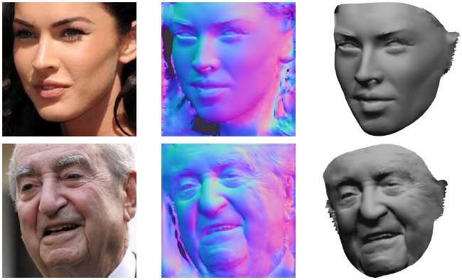
V. Abrevaya, A. Boukhayma, P. Torr, E. Boyer
CVPR 2020 (Oral)
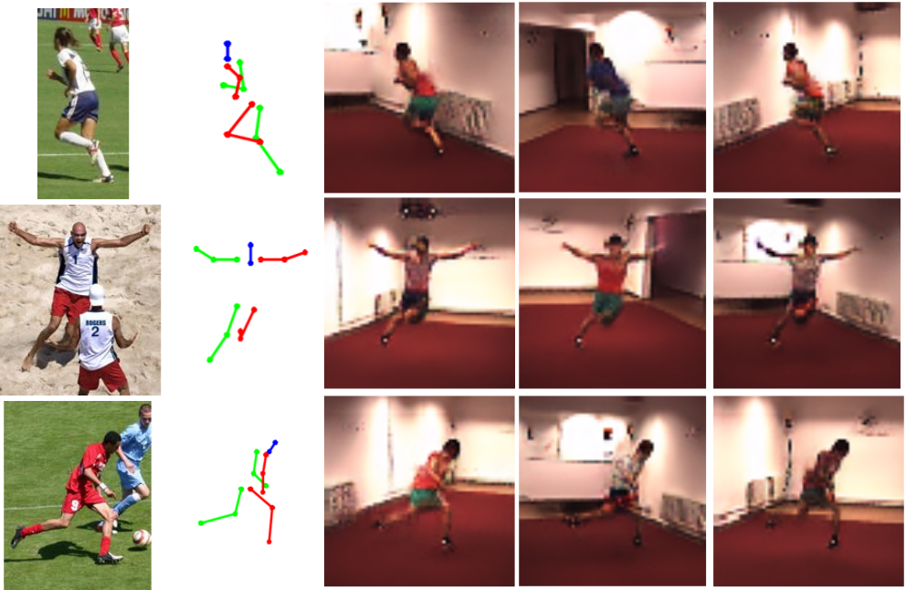
R. de Bem, A. Ghosh, T. Ajanthan, O. Miksik, A. Boukhayma, N. Siddharth, P. Torr
IJCV 2020
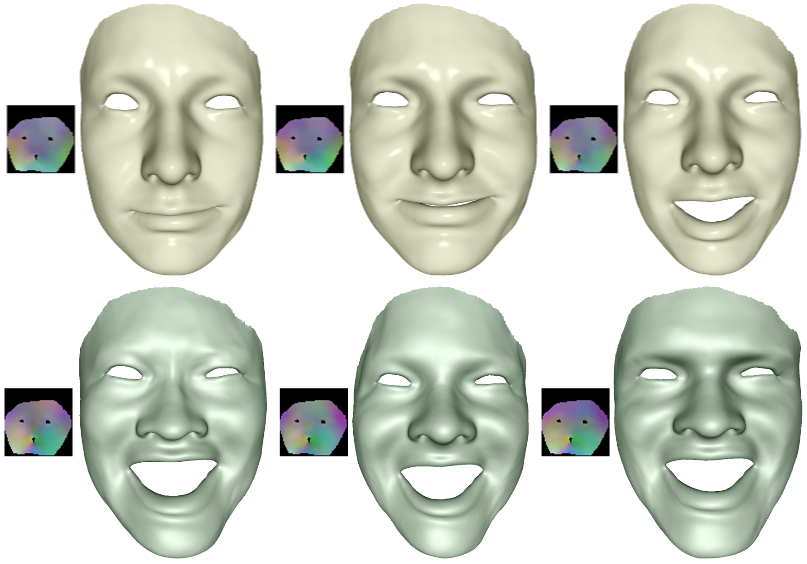
V. Abrevaya, A. Boukhayma, S. Wuhrer, E. Boyer
ICCV 2019 (Oral)
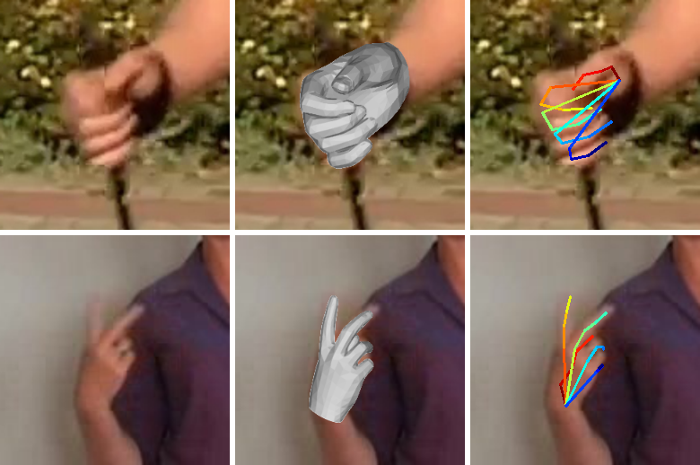
A. Boukhayma, R. de Bem, P. Torr
CVPR 2019 (Oral)
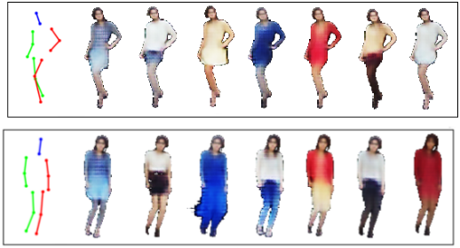
R. de Bem, A. Ghosh, A. Boukhayma, T. Ajanthan, N. Siddharth, P. Torr
WACV 2019
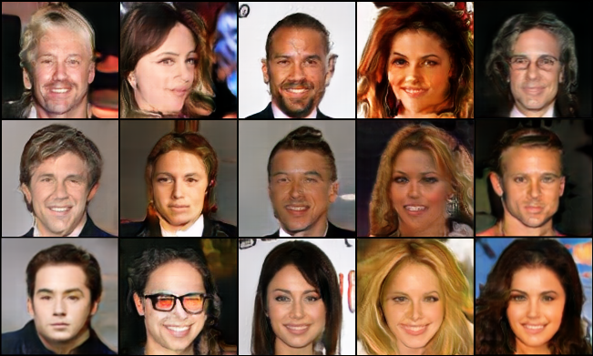
B. Csaba, A. Boukhayma, V. Kulharia, A. Horváth, P. Torr
arXiv preprint 2019
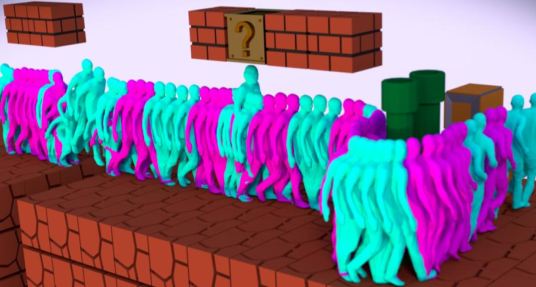
A. Boukhayma, E. Boyer
TVCG 2018
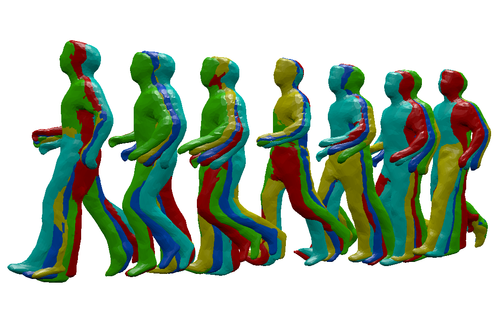
A. Boukhayma, E. Boyer
3DV 2017
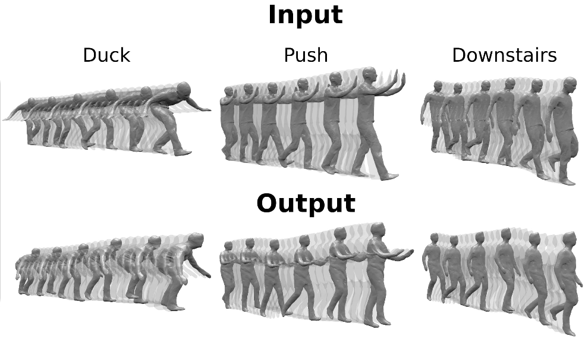
A. Boukhayma, J. Franco, E. Boyer
CVPR 2017
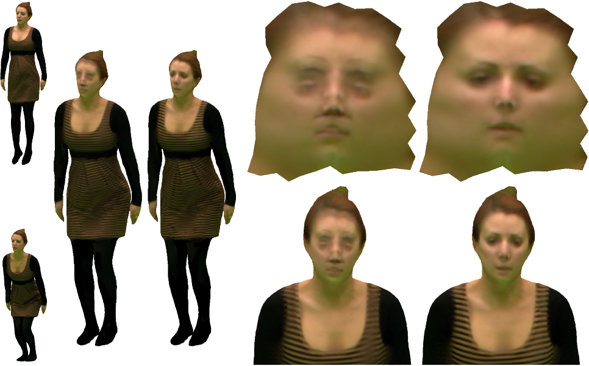
A. Boukhayma, V. Tsiminaki, J. Franco, E. Boyer
ECCV 2016
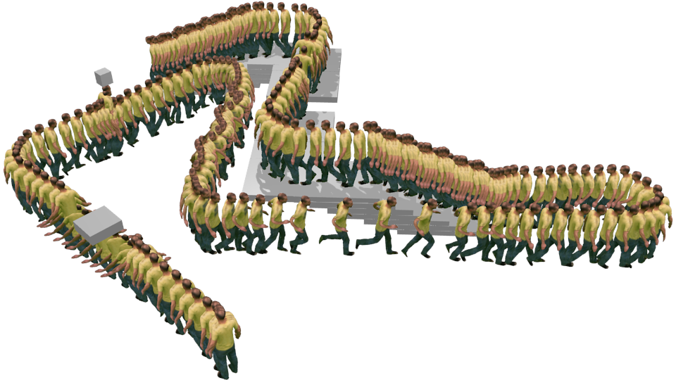
A. Boukhayma, E. Boyer
3DV 2015 (Oral)
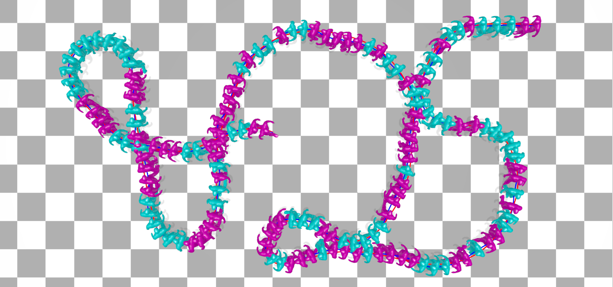
A. Boukhayma
PhD thesis
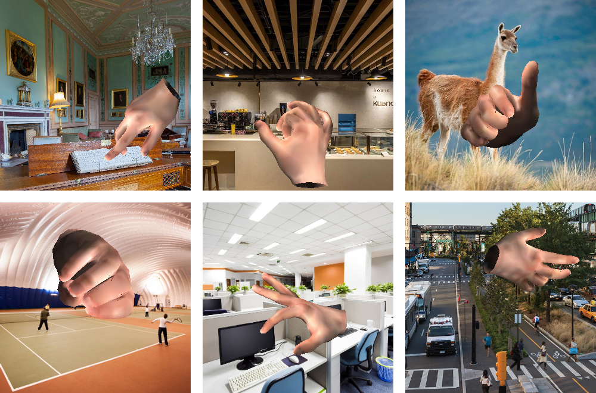
Synthetic 3D Hands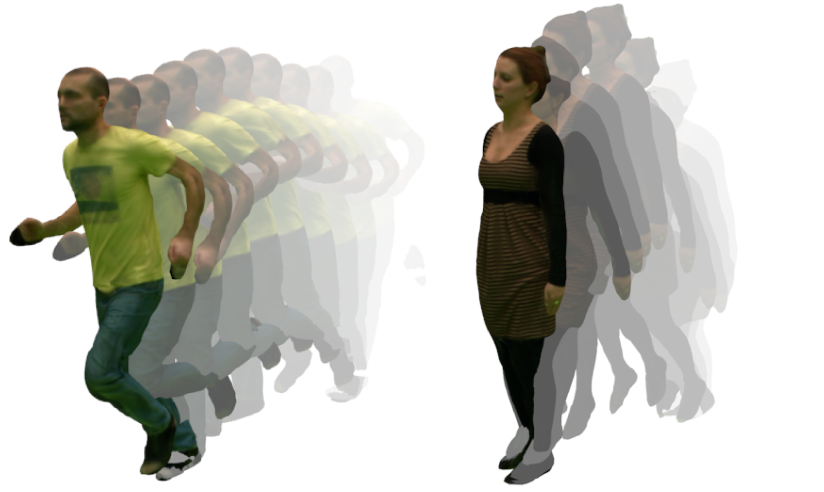
4D Human Appearance and Shape in Motion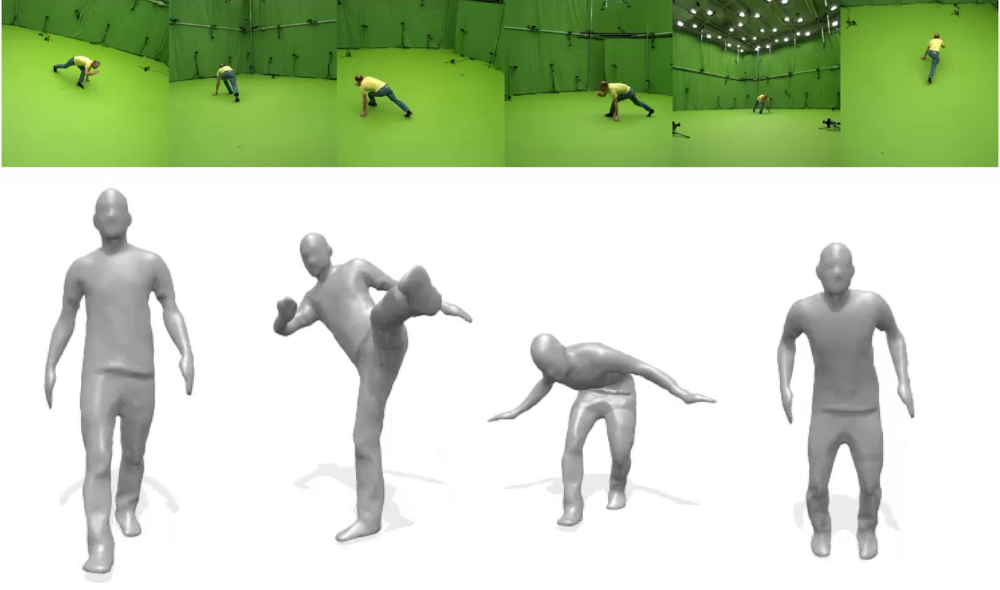
4D Human Shape in MotionInria Rennes - Bretagne Atlantique, Bureau E105 Campus de Beaulieu, 263 Avenue Général Leclerc 35042 Rennes France adnane.boukhayma(at)inria.fr